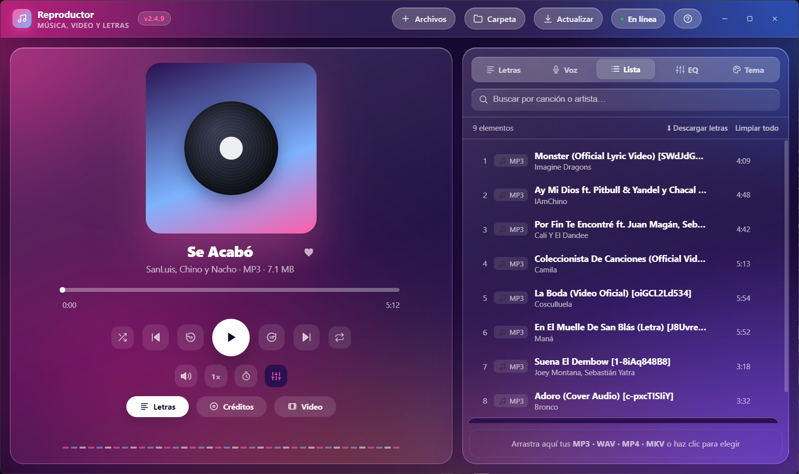
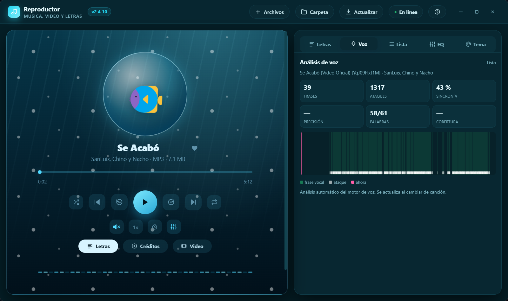

Qué hace
La letra se busca, se verifica y sigue a la voz
Reproducción de audio con letras sincronizadas.
Búsqueda automática de letras (lrclib, letras.com, lyrics.ovh).
Sincronización automática con la voz (análisis de audio).
Las letras LRC resaltan palabra por palabra siguiendo la voz del cantante, con relleno progresivo (efecto karaoke fluido).
Indicador automático de sincronía con la voz: avisa si la letra va adelantada, atrasada o no coincide (solo informa, no cambia los tiempos).
Si la letra no venía sincronizada, el indicador muestra «Ajuste automático» en ámbar en vez de un porcentaje verde engañoso; primero se intenta descargar una letra sincronizada real.
Verificación de letra correcta (idioma, artista, similitud).
Funciona sin internet (letras guardadas en caché + archivos .lrc).
Actualizaciones manuales desde el botón Actualizar.
El botón Actualizar descarga solo la app (~4 MB) y, al pulsar «Instalar», la cierra, la sustituye y la reinicia sola (sin instalación del sistema).
Completa los tramos sin letra con reconocimiento de voz local; el modelo (148 MB) se descarga una sola vez.
La letra espera a la voz: en un silencio instrumental no se adelanta; avanza cuando vuelve el canto.
Ajuste manual por tramo: mueve ±0,1 s desde la línea activa y guarda el cambio.
Capturas
Lista y análisis de voz


Instalación
Cuatro pasos
- Descarga el instalador desde Releases
- Ejecuta el instalador
- La app se instala en C:\Users\<usuario>\AppData\Local\Programs\reproductor-musica\
- Cuando haya una versión nueva, usa el botón Actualizar de la app
Requisitos
Lo que necesitas
- SistemaWindows 10/11 (x64)
- ConexiónInternet solo para la primera descarga de letras
Agrega canciones arrastrando archivos o con el botón Agregar. Las letras se buscan automáticamente al cargar cada pista, y la barra espaciadora reproduce o pausa.
Descarga la última versión
El instalador y las notas de cada versión están en GitHub.